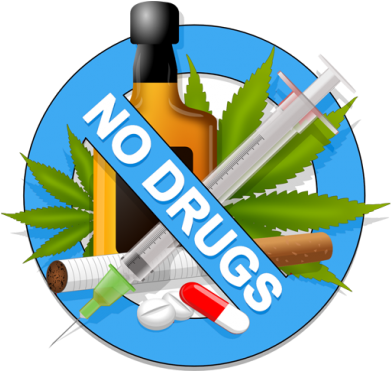
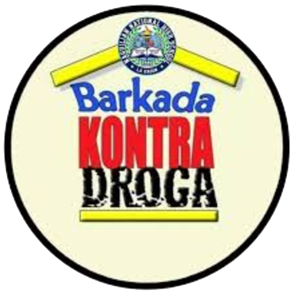

Ang Barkada Kontra Droga
 Barkada Kontra Droga:
Bilang suporta sa Republic Act 9165, ang Kagawaran ng Edukasyon ay naglabas ng kautusan na nagbibigay-diin sa papel ng sistemang pang-edukasyon sa pagpapatupad ng Artikulo III na may kaugnayan sa random drug testing of secondary or high school students. Ang Artikulo IV ng nasabing kautusan ay nananawagan para sa partisipasyon ng mga pamilya, mag-aaral, mga guro at awtoridad ng paaralan sa pagpapatupad ng batas.
Ang tungkuling ito ay isinama sa National Drug Education Program (NDEP) na itinatag noong 1992 sa bisa ng Republic Act 7624 na pinamagatang “Integrating Drug Abuse Prevention and Control” sa Intermediate at Secondary Curricula gayundin ang Non-Formal, Informal at Indigenous Learning System. Mayroong organisasyong nabuo upang magsulong ng kamalayan
Drug abuse is a critical issue that endangers individuals and communities, often stemming from peer pressure, stress, curiosity, or a desire to escape personal struggles. The consequences, however, can be devastating, leading to health complications, damaged relationships, and lost potential. To address this concern and encourage positive choices, Barkada Kontra Droga (BKD) was established. BKD is a peer group designed as a preventive education and information program to combat the dangers and harmful effects of drug abuse.